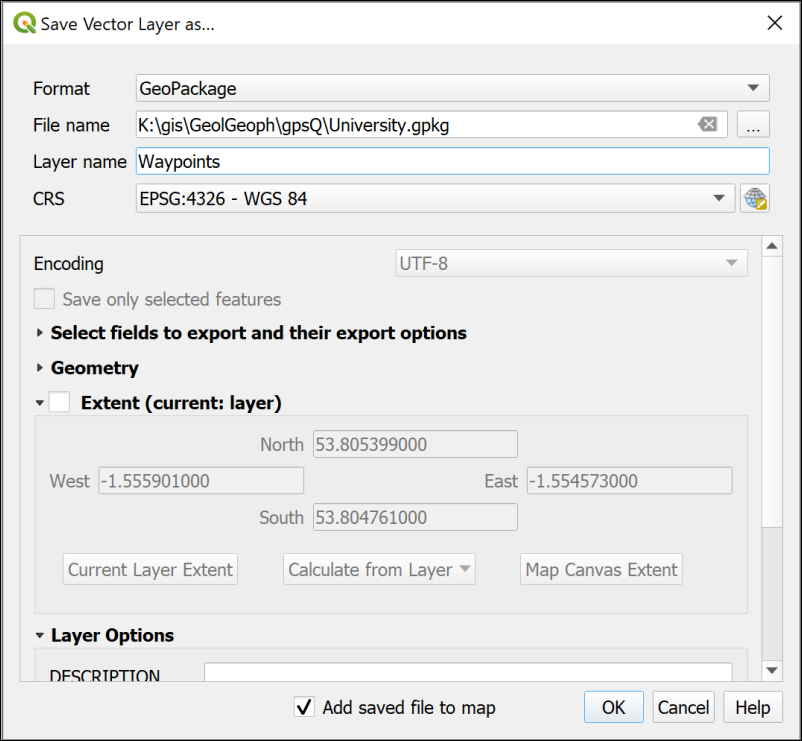
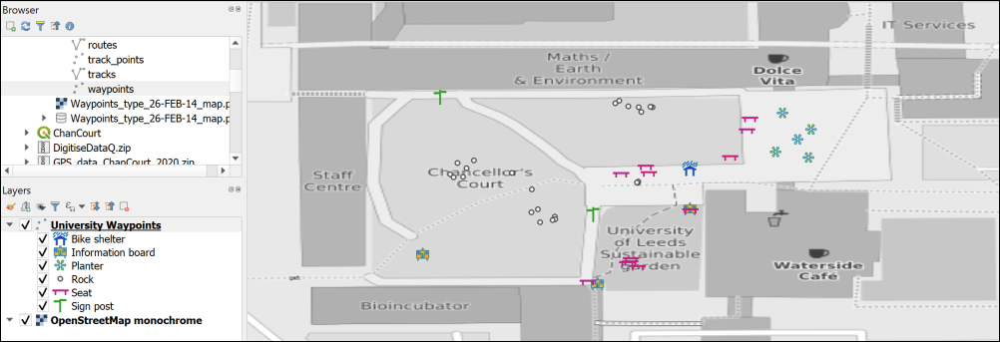

Creating point data with GPS
The background to creating point data with gps will be covered in the lecture segment at the beginning of the class, and the presentation and any other supporting materials will be available in Minerva. The lecture segment should help you to understand why you are doing these exercises. If you still aren’t sure, please ask Clare.
Learning outcomes
When you have completed this section of the workbook you should be able to
- Explain what a geopackage consists of and why it is used to store GIS data
- understand how you can collect your own spatial data for use in GIS
- explain how to symbolise data on a map so that it displays clearly and informatively to your audience
Introduction
The previous chapter should have given you some idea of the variety of data that is available for you to use, but there is nothing to replace going out and collecting your own data and it is very likely that you will be using GPS units for fieldwork at some point.
If you are new to GPS and would like to find out more about the background and technology there is a beginners guide at:
Collecting data with a GPS unit
Unfortunately this year (2020) it isn’t possible for us to go out onto campus as a group and collect waypoints with a GPS unit so I will provide the data for you.
If you have access to a GPS unit you could go outside on your own and collect waypoints. Note that this exercise doesn’t make use of tracks or routes. You should then download a .gpx file from your GPS and follow the instructions in the rest of this chapter.
Data to download
- Download the file
GPS_data_ChanCourt_2020.zipfrom the Week 8 folder in Minerva - Save the file to your disk and unzip it
The zip file should contain the following items
- a folder called
mastermap - several files which make up a single shapefile called
LocationBNG.shp- make sure that you keep all of these files together Waypoints_26-FEB-14.gpx- waypoints which I collected back in 2014 and luckily still have. This is the file downloaded from gps unit.Waypoints_type_26-FEB-14_map.pdf- a map showing the location and type of all of the waypoints that I collected.
Starting a new project in QGIS
You can just open QGIS and start adding data, but it will help you later if you take more care at this stage.
- Open QGIS
- Go to
Project > Saveand navigate to the folder in which you would like to save your project. This could be a folder calledgiswith a subfolder calledChancellorsCourt- note that there should not be any spaces in the folder name. - Give your project a name, e.g.
ChanCourt- short and no spaces. Save
Having done that you should have a file in your folder called ChanCourt.qgz.
- Go to
Project > Propertiesin the menu in QGIS and click on theGeneralheading on the left - The
Project fileshould already be filled in - Set
Project hometo the folder in which you saved the qgz file - Set the
Project titleto something likeChancellors Court, University of Leeds- basically a description of what your map is going to show. - Check that
Save pathsis set torelative - Click
OK
Save paths is probably the most important project setting as it can save you from having data go missing if you move your project to another computer. By setting this to relative, as long as you move the whole folder, your data and your map will stay linked.
Using the Browser to find information about a layer
Now that you have the Project home set it is possible to use that heading in the Browser to find everything associated with this project (assuming all of your files are in that folder).
- Go to the
Browser(if it isn’t already open go toView > Panelsand put a tick next toBrowser). - Click on the little arrow next to
Project Hometo see the contents of the folder. You should see all of the files that you unzipped earlier.
One of the benefits of the browser is being able to have a look at the details of your data before you add it to a map.
If you are in version 3.16 or above of QGIS
- click on the little arrow next to
Waypoints_26-FEB-14.gpx
You should see that the file includes several layers. For this exercise the only one we want is waypoints
- Right-click on the
waypointslayer and go toLayer Properties
If you are in version 3.10 of QGIS you won’t be able to see the layers within the gpx file, but you can still get the right data.
- Right-click on the
Waypoints_26-FEB-14.gpxlayer and go toLayer Properties
In both versions
- Use the three tabs at the top of the layer properties -
Metadata1,PreviewandAttributes- to have a look at your file.
The Metadata tab tells you quite a lot, but the Preview tab can confirm that your data looks correct, and the Attributes tab will let you see the table of data that you have.
Make a note of the CRS
One particularly important piece of information is the CRS, or Coordinate Reference System. You’ll need to know this later.
Make a note of the text next to the
CRSsubheading in the Metadata then close the Layer Properties.
Adding a gpx layer to a map
This is slightly different in the older and newer versions of QGIS.
In version 3.16:
- Drag and drop the waypoints layer from the Browser to the Layers panel.
In version 3.10:
- Double-click on `Waypoints_26-FEB-14.gpx’ in the Browser
- In the
Select Vector Layers to Adddialog selectwaypoints - Click on
OK
In both versions
You should now have a map showing small circles for each of the waypoints which looks something like the image below. (Your colours may be different.)
Exporting gpx layer to a geopackage
As the layer is stored at the moment, this is not a proper GIS layer. If you are going to use these points for further analysis or measurements you need to export them to a GIS format, such as a layer in a Geopackage.
Geopackage format
A
geopackageis a form of database designed to store spatial data. It has been relatively recently developed but it’s use as a GIS format has spread very quickly. QGIS encourages the use of geopackages and it is increasingly possible to use them in other GIS software.You will store vector data in a geopackage as multiple layers.
If you want more information about the format there is a lot on the GeoPackage website.
To export the waypoints to a geopackage layer:
- In the
Layerspanel right-click on thewaypointslayer Export > Save Features As...- Fill in the panel that opens as follows:
Format=GeoPackage- Click on the
...button at the end of theFile namebox, navigate to the folder in which you want to store your geopackage - preferably the same folder as your .qgz file, then give your geopackage a name, e.g.University.gpkg. The location tends to be a good idea here. Save- In the
Layer namebox give your layer a name such asWaypoints- it needs to be a name that will tell you what data this layer contains. - Check that the
CRSfield is the same as the CRS you made a note of earlier - in this case that should beEPSG:4326 - WGS 84 - Check the bottom of the form to make sure that
Add saved file to mapis ticked.
- Click
OKto create the geopackage and add the new layer to your map.

Your map won’t look much different, though the dots may have changed colour.
The new GeoPackage should have appeared in the Browser in the folder you saved it to. Have a look at that now and drop down the arrow next to the .gpkg file to check that the Waypoints layer is there.
Components of a GeoPackage
If you have a look at the same .gpkg file in your file explorer outside of QGIS you’ll probably see three files with the same name but slightly different extensions -
.gpkg,.gpkg-shmand.gpkg-wal. The last two are temporary files which appear when the geopackage is open in QGIS. The geopackage itself is a single file and without appropriate software, such as QGIS, you can’t open it and see the contents.
To keep the Layers panel tidy right click on the original waypoints layer and Remove layer...
Installing QGIS plugin to display a background map
At the moment you have your waypoints on a map, but can’t check where they are located because the background is just plain white.
One of the strengths of QGIS is that it has a wide variety of plugins that you can install to carry out extra tasks. One of these plugins allows you to add maps from the web as background maps so we’ll install that now.
- In the menu go to
Plugins > Manage And Install Plugins... - When it opens click on the
Installedheading on the left to see the plugins that are already installed. - If you click on a plugin you’ll be able to see a bit about it in the panel on the right.
To install a new plugin:
- Click on
Not installedon the left - Type
QuickMapServicesinto the search box at the top - From the list that appears click on
QuickMapServicesand have a look at the description - This plugin will do what you want it to do so click on
Install Plugin
Once it has installed you should get a message at the top telling you it has been successful and QuickMap Services should now be in the list of Installed plugins.
- You can
Closethe plugin manager now.
Once the plugin is installed you will have new menu items and toolbar buttons available to you.
- On the menu go to
Web > QuickMapServices. - You should have a very long list of choices available. Go to
OSM > OSM Standard.
OSM stands for OpenStreetMap which is a crowd-sourced map of the World. It can be very useful for quick maps, but isn’t always completely reliable and some areas don’t have much data.
Now that you’ve added the OSM Standard basemap you should be able to see the details of Chancellors Court at the University with your waypoints shown on top. If you can’t see your waypoints check that they are above the basemap in the Layers pane.
- Zoom to 1:500 to see the buildings around Chancellors Court too.
- If your points are not appearing over Chancellors Court then there may have been something wrong with the CRS when you imported them. Try importing them again and be careful with the settings.
Have a look at some of the other basemaps from QuickMapServices. Not all will cover this area, and some need a licence key, but there are plenty of choices. You will need to switch off other basemaps in the Layers when you add new ones so that you can see them. For example, try
Bing Map
Bing Satellite
OSM Cycle map
OSM monochrome
Finish with the OSM monochrome basemap on your map with all of the other basemap layers removed. The monochrome (black and white) background map will make your data easier to see.
Don’t forget to Save your map regularly.
Adding extra data to feature classes
The layer that you have saved to a Geopackage is known in GIS terms as a feature class. This contains your features and data for each one which are called attributes.
- In the Layers panel right-click on your
waypointslayer and selectOpen Attribute Table.
The attribute table is the GIS equivalent of a spreadsheet and contains features and their attributes.
Amongst many other attributes there should be one for name which should include the label or name of each waypoint as stored by the GPS unit. In this case the name field holds a number which matches the numbers of the points on the Waypoints_type_26-FEB-14_map.pdf file which you downloaded from Minerva.
- Open the file
Waypoints_type_26-FEB-14_map.pdffrom the downloaded data and have a look at the information there
Labels on the map show the name field followed by a description of the type of feature, e.g. Rock, Sign post, Planter.
Somehow we need to get that extra information in to the attribute table and unfortunately that has to be done manually!
- Have another look at the waypoints attribute table. There is a field there called
descfor description. This seems to be a sensible field in which to put the new information.
To start adding attributes to a table you need to start editing the feature class.
- On the attribute table window click on the
Toggle Editing Modebutton at top left (see the annotated picture of the attribute table above, and remember that tool tips are visible if you hover over buttons). If you’re not sure whether a layer is editable have a look at the Layers panel - any layer toggled for editing will have a little pencil symbol on the left. - Click in the space under
descfor the point with the name001- the wordNULLshould be selected - Look at the pdf map and find point
001(it’s top left of Chancellors Court) - what is the description of it? - If you have trouble finding it try selecting the feature in the attribute table by clicking on the number in the grey space on the left. The point will then be highlighted on your map in QGIS
- The description for point 001 should be
Sign postso type that in to the attribute table. - Click on the
Save editsbutton on the attribute table toolbar to write your edits to the feature class in the geopackage.
Continue doing this for some more of the points. Don’t worry if you can’t find some of them on the map - just leave those blank (NULL). Try to do a minimum of about 20 of the points. There are rather a lot there and you don’t need to do all of them on this occasion!
- Once you’ve input the descriptions (and saved your edits) click on the
Toggle Editing Modebutton again to stop editing - then close the attribute table by clicking on the cross in the top right.
Styling the point layer
Now that you have the description in your attribute table you can style your point layer, initially as a single symbol but then with different symbols for different types of feature.
Styling a layer as a single symbol
The default styling is for single symbols.
- Select the
waypointslayer in the Layers panel and click on theOpen the Layer Styling panelbutton - at the top of the Layers panel on the left or from the menu go toView > Panels' and put a tick next toLayer Styling`. - This should open on the right of the map window and gives you choices for the way your layer looks.
In this view you can click on any of the symbols in the gallery and the symbols on your map will change to match them. Try this now by picking any symbol from the gallery.
The section at the top allows you to change the size, opacity and colour of the symbols. Again, try changing the choices there and see what they do. You get more choices if you click on the Simple marker symbol layer.
Styling a layer as categories
So far you have a single coloured symbol representing every point. Your map would be much more informative if each type of feature had it’s own symbol.
- At the top of the Layer Styling panel click on the dropdown that says
Single symboland change it toCategorized - Now drop down the list next to
Valueand select the field that you want to categorize your symbols on - in this casedesc - Lower down the panel click on the button that says
Classify
Your descriptions should appear as a list and the symbols on your map should change to a variety of random colours.
Note that the attributes that you left as NULL in the attribute table have all been styled as a symbol listed as all other.... It would be good to get rid of that as it isn’t adding any useful information to the map.
- In the Layer Styling panel untick the box on the left of the
all other...category. Alternatively you can click on this and then on theDeletebutton at the bottom of the panel to get rid of the symbol completely.
The NULL symbols should all disappear from the map.
Note that the Layers panel on the left now acts as a key to your waypoints layer.
Changing to svg markers
You can change the symbols by double-clicking on each symbol in turn and selecting different ones from the Gallery.
At the moment all of your symbols are Simple markers. It is easy to change them to SVG markers and have a wider range of symbols to choose from.
- Double click on the first symbol in your list in the Layer Styling panel (in my example it is
Bike shelter) - In the box at the top click where it says
Simple marker - Below that change the
Symbol layer typetoSVG marker
SVG stands for Scaleable Vector Graphics and is basically what it says. In the context of QGIS it gives you a much greater range of pictorial symbols with which to style your map.
- Have a look at the SVG Image gallery at the bottom of the panel and select an appropriate symbol.
- You can use the settings above the change the size, colour, rotation etc.
- The symbols should appear on your map automatically, but if they don’t click on
Apply - When you’ve finished click on the back arrow at the top of the panel to get back to the list.
Continue in the same way to select appropriate symbols for the rest of the categories of point.

Once you’ve finished setting the symbols for the waypoints, save your map and close it.
Changing the coordinate system (CRS) of data
The GPS data that you have collected is in the WGS 84 geographic coordinate system. Remember that you checked this earlier. QGIS sets the project CRS to that of the first layer that you add to the map. So in this case the map CRS is also WGS 84.
Often you will need to use data in a local projected coordinate system. The obvious example is if you are using Ordnance Survey maps from Digimap in the same project. This is the example we will use now, but the same situation can arise if you are, for example, creating a map of Spain or Eire2.
We’ll set up a map project in British National Grid and add the gps data to that.
- Open QGIS from the start menu, but don’t open a map.
- Use the browser panel to drag the
LocationBNG.shpshapefile that you will have downloaded from Minerva to the Layers panel. It should appear in your map area. Remember that the first layer that you add to a map automatically sets the coordinate system. - You may get a window like the one below asking about Transforms, just click
OKon this for now. This is to do with ways of “transforming” data from one CRS to another.
You should find that you have a map with two polygons in a random colour. If you look at the bottom right of the map window you should be able to see the text EPSG:27700. This is the code for British National Grid and confirms that your map is in the correct CRS.
- Save your map to the same folder as the previous map. Call it something like
UniversityBNG.qgz- BNG = British National Grid. - Add the
OSM monochromebase map to your map again. You already have the plugin installed so don’t need to do that again. - Style the
LocationBNGpolygon layer so that it has an outline but no fill. You should be able to see the base map through it. Styling a polygon layer is very similar to styling points so you should be able to use the previous instructions again.
Now it should be possible to see that both polygons cover parts of the University, but the one that is relevant for this map is the one to the south which covers Chancellors Court.
- Zoom in to the polygon to the south.
- Now add the
Waypointslayer from your geopackage (not from the original gpx file) to the Layers panel from the Browser.
They should appear in the correct place, even though they have a CRS of WGS 84 and the map is in British National Grid. You can check this in the layer properties if you want to.
QGIS is projecting the layer “on the fly” using a transformation. This is very convenient, and if you are just going to look at the map that is fine. But if you need to do any analysis or measure anything then you really need to get this layer projected in to British National Grid as well.
To project the layer permanently
- Right click on the
Waypointslayer in the Layers panel or in the Browser Export > Save features as...- Fill in the
Save Vector Layer as...dialog as follows- The
Formatshould beGeoPackage - Click on the three dots button next to
File nameand browse to your existing Geopackage. - Give the output a
Layer namewhich will remind you what it contains, e.g.WaypointsBNG - Drop down the
CRSand selectProject CRS: EPSG:27700 - OSGB 1936 / British National Grid.
- The
- Finish by clicking
OK
Your map probably won’t look much different but the new layer should have been added to the Layers panel. If it hasn’t drag it over from the Browser.
- Check the new CRS by right-clicking on the new layer and going to
Properties - Look at the
Informationtab. - The
CRSheading should sayEPSG:27700 - OSGB 1936 / British National Grid - Projected. If it doesn’t you may have to try again and check everything carefully as you go along. Removethe original waypoints layer from your Layers panel andSaveyour map.
Now you have a map in British National Grid which shows your waypoints and which, because all layers match the map CRS, can be used for analysis.
- Make sure you have both of your maps of Chancellors Court open in QGIS
- If you compare your two maps you should be able to see that the different CRS gives a very different idea of the “shape” of Chancellors Court.
This is because the projected CRS, British National Grid, is designed to be best to display maps of Britain on a cartesian grid whereas the geographic CRS, WGS 84, is designed to display maps of the whole world in latitude and longitude. This means that the mathematics behind each CRS is rather different.
Copying styles
If you want to style the point symbols on your BNG map so that they are the same as the WGS 84 map try the following short cut:
- In the WGS 84 map right-click on the waypoints layer and select
Styles > Copy Style > All style categories - In the British National Grid map right-click on the waypoints layer and select
Styles > Paste style > All style categories
Your styles should be copied across and your map is ready to go!
The final map
Set the symbols on your map so that you are happy with them and zoom out so that a bit more of the University is visible.
You should export your map from QGIS as an image and upload it to your GIS Portfolio. If you upload it within a week of the class I will give you feedback on your work.
- When you are happy with your map go to
Project > Import / Export > Export Map to Image - In the
Save Map as Imagedialog set the extent by clicking on theMap Canvas Extentbutton - Click on
Save

In a later chapter you’ll find out how to create a full map layout with a key, scale bar, measured grid etc and print or export that properly, but for now this is fine.
In the next chapter you will be creating data in QGIS by digitising. We will use the area of Chancellors Court again, so keep this project for that.
Further information and suggested reading
Many of the books in the reading list3 have a general introduction to GIS which explain what it is and how it is used. Suggestions include the following:
- Chapter 2, Spatial data in Heywood, I., Cornelius, S. and Carver, S. (2011), pp.65-67 cover GPS.
- Chapter 4, Georeferencing in Longley, P.A. et al. (2015), pp. 77-98 covers latitude and longitude (from p.86),projections and coordinate systems (from p.88) and gps (from p.94).
If you want to find out more about coordinate systems and projections in general then the definitive guide is the USGS Professional Paper 1395 by John P. Snyder (1987) called Map Projections: A working manual. This is downloadable as a pdf.
The QGIS Documentation has a chapter on Working with GPS data which covers much more than we have been able to cover here.
-
Metadata can be described as “data about data”. A commonly quoted example is a library catalogue, which holds data about books. ↩
-
If you want to find out more about coordinate systems and projections have a look at Heywood (2011) pp. 44-51 for a general introduction. ↩
-
The reading list is available in Minerva and from the library (search for the number of this module). ↩